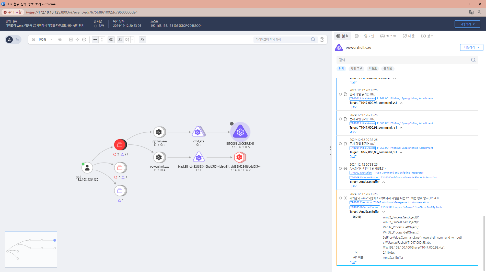

MITRE ATT&CK 액션을 기준으로 대응 방안을 작성

Action 실행시 함께 영향을 받는 다른 Techniqes
| ATT&CK |
|---|
| T1047.000.98 |
| D3FEND |
|---|
| D3-SICA System Init C |
| D3-DA Dynamic Analysis |
| D3-PM Platform Monitoring |
| D3-PSA Process Spawn Analysis |
| D3-FIM File Integrity Monitoring |
| D3-NTF Network Traffic Filtering |
| D3-ITF Inbound Traffic Filtering |
| D3-OTF Outbound Traffic Filtering |